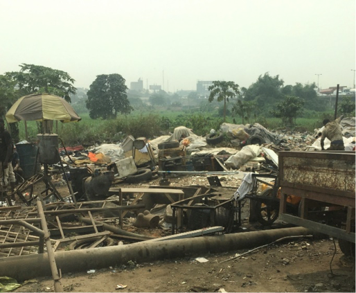
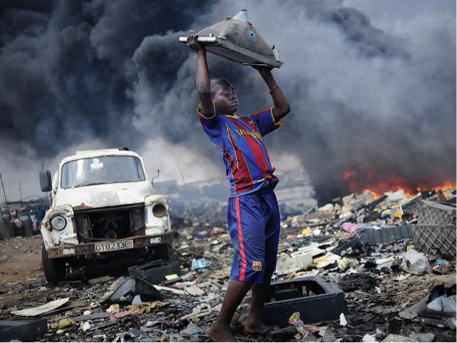

📱 Do you really need a new phone?
Discarded electronic and electrical equipment such as mobile phones and computers is E‑waste.
E‑waste is the fastest growing global waste stream. It contains valuable metals, which is logical to recycle in a sustainable way.

E-waste handling under sub-standard conditions near Lagos, Nigeria (photo: Leiv K. Sydnes)

Typical handling of waste from computers and televisions in Ghana (from https://www.wired.com/story/international-electronic-waste-photographs)
Over 50% disappears and often re-emerges in African countries.
In 2022 from a globally estimated 62 million tonnes of e-waste, formally just 22.3% was documented as collected and recycled.
In Africa it is handled inadequately with substandard working conditions.
E-waste recycling in Africa has a considerable environmental impact. Large areas of fertile land has become useless, and massive clean-up operations are needed before the land can again be returned to agricultural purposes.
Toxic materials known to cause harm to human health are released when e-waste is handled inappropriately.
Particularly vulnerable are Children and pregnant women.
It is estimated that millions of women and child labourers may be at risk of hazardous e-waste exposures due to working globally in the informal recycling sector.